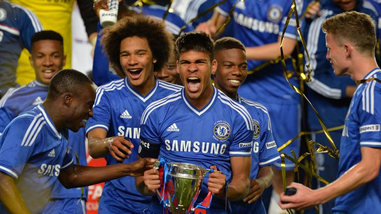
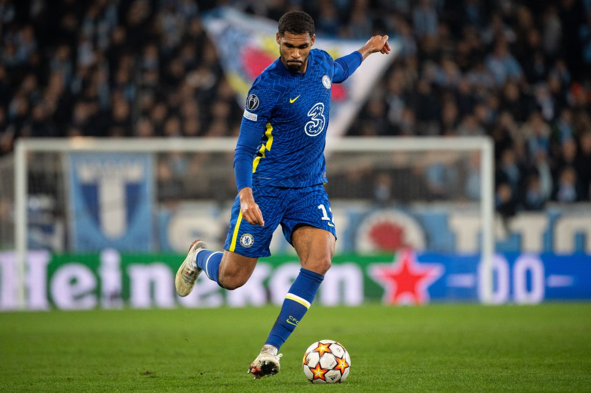
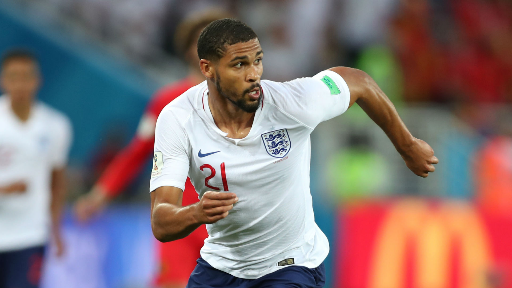

RUBEN LOFTUS-CHEEK
RUBEN LOFTUS-CHEEKดาวเตะคนนี้มีพรสวรรค์ในการเป็นมิดฟิลด์แบบบ็อกซ์-ทู-บ็อกซ์ นั่นคือเป็นผู้ที่สามารถคุมเกมได้ดี นอกจากนั้นยังมีทักษะส่วนตัวที่สามารถไปกับบอลได้อย่างยอดเยี่ยม
ผลงานของเขาในแดนกลางนั้นเป็นส่วนสำคัญที่ทำให้ทีม U18 ผ่านเข้ารอบชิงชนะเลิศ ยูธ คัพได้สำเร็จอีกครั้ง แลกเขาลงเล่นสามนัดในรอบสุดท้ายของรายการ NextGen Series เมื่อทีม U19 แพ้ให้กับแอสตัน วิลล่าในรอบชิงชนะเลิศ ฟอร์มการเล่นอันแข็งแกร่งของเขานั้นทำให้เขาได้รางวัลในการไปทัวร์หลังจบฤดูกาลกับทีมชุดใหญ่ในเดือนพฤษภาคม ปี 2013 ที่สหรัฐอเมริกา เป็นการแข่งขันสองนัดที่พบกับแมนเชสเตอร์ ซิตี้
ในฤดูกาล 2013/14 เขาเป็นหนึ่งในสมาชิกทีม U21 ที่คว้าแชมป์พรีเมียร์ลีก ตลอดจนเป็นกัปตันทีม U18 คว้าแชมป์เอฟเอ ยูธ คัพด้วย
ลอฟตัส-ชีค ลงเป็นตัวจริงในเกมแรกของฤดูกาล โดยเป็นแมตช์ที่เราบุกไปเอาชนะไบรท์ตัน ก่อนเจ้าตัวจะย้ายไปค้าแข้งแบบยืมตัวเพื่อเรียกความฟิตกลับคืนมา
ลอฟตัส-ชีค ได้รับรางวัลตอบแทนจากผลงานที่ยอดเยี่ยมในการเล่นแบบยืมตัวให้คริสตัล พาเลซ โดยถูก แกเร็ธ เซาท์เกต อดีตเจ้านายในระดับ U-21 ของเขาเรียกติดทีมชาติชุดใหญ่ และได้ประเดิมนสนามเป็นตัวจริงที่แข่งขันกับเยอรมนี ณ เวมบลีย์ในเดือนพฤศจิกายน 2017 เขาได้รับรางวัลแมน ออฟ เดอะ แมตช์ในนัดนั้นด้วย
หลังมีชื่อติดขุมกำลังทีมชาติอังกฤษเข้าร่วมแข่งขันฟุตบอลโลก 2018 ลอฟตัส-ชีคได้ลุกจากม้านั่งสำรองและลงเล่นเกมนัดเปิดสนามกับตูนิเซียซึ่งสกอร์ ณ เวลานั้นเสมอกันอยู่ที่ 1-1 ถือเป็นการเริ่มต้นที่น่าประทับใจจากดาวรุ่งรายนี้ โดยเขาสร้างปัญหาให้กับคู่แข่ง ก่อนเป็นคนทำให้ทีมได้ลูกเตะมุมซึ่งนำมาสู่ประตูชัยช่วงท้ายเกมของทีมชาติอังกฤษ
จากนั้นเขาได้ลงเป็นตัวจริงในแมตช์ พบ ปานามาและเบลเยี่ยมโดยโชว์ผลงานที่ดีทั้งสองเกม ก่อนจะมีส่วนร่วมทุกนัดยกเว้นช่วง 6 นาทีสุดท้ายในเกมรอบชิงที่ 3 ซึ่งแข่งขันกับเบลเยี่ยม
SOCIAL MEDIA
 |
|